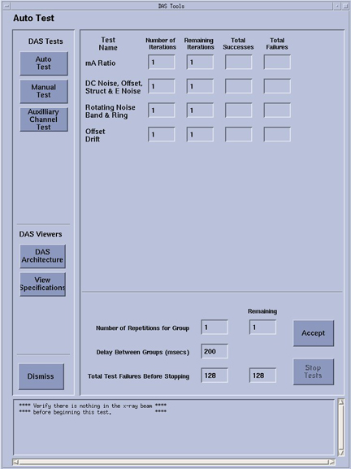

Proprietary to General Electric
Direction 5307452-8EN, Rev# 4
Discovery CT750 HD Service Methods - Adv
Proprietary to General Electric |
| Last Revised: | March 13, 2008 |
DASTool is both a tool and diagnostic used to test or exercise most or all functions of the DAS, to verify the performance in both a manufacturing and field service environment. There are several sub-tests within DASTools that are specifically used during system install/integration, while other tests are used for diagnostic purposes. There is also a section called “viewers,” which allows the user to view the DAS architecture relative to DAS to Detector channel mapping, and view the test specification limits for each test.
The purpose of this document is to define the DASTools diagnostic interface.
Illustration 1: DAStools GUI

The Illustration above shows the Auto test menu for DASTools. Button names may change slightly with different software releases. Access is through the Diagnotics tab from the Common Service Desktop GUI on the Service Desktop.
For most of the scanning in DASTools, DDC protocols are used, and the scan data is stored in standard scan data files that can be used for further review in Scan Analysis. During the scanning portion of the test, the exam, series, and scan number are displayed on the screen, as well as in the error log, if the analyzed scan data falls outside the expected values.
DAStools is comprised of the following GUI selections.
Select this link to view information on this topic. Note: that you can use the mouse right click to open this link in another window.
The DAS Architecture selection allows you to enter a detector channel and row value. The utility will then show all the mapping information from those entries including detector module and DIFB that the row and channel maps to.
The View specifications button opens a window that shows the specifications for each test run. These specifications are also shown next to the failing test data for easy reference.
The view log button pulls up the DAS Tools history log that shows the details of all failures of all the test runs. This log is a listing of all passes appended together with the last results shown at the bottom of the log.